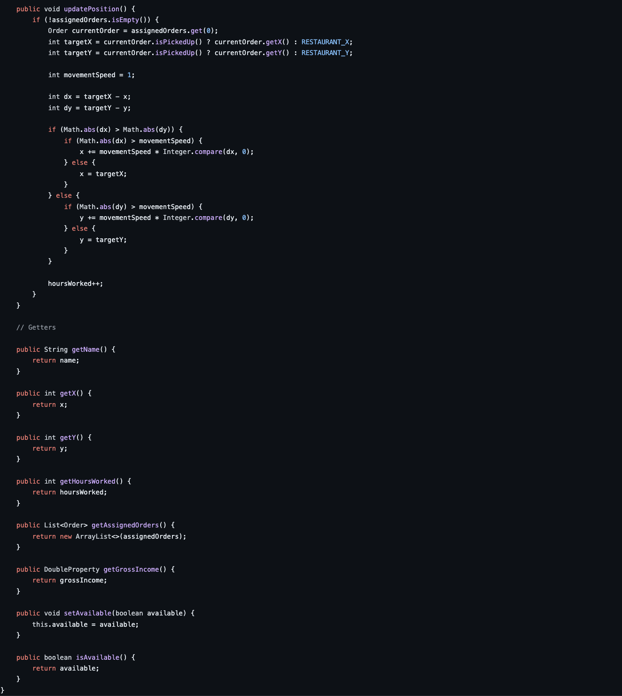

Cuisine To Go Application
Project Overview
Cuisine to Go is a food delievery simulation app that allows a delivery company to optimize their schedule by sending the closest driver to pick up available orders. The program assigns active drivers to fulfill orders by picking up food orders then traveling to their drop-off location, and updates the map to show the current status of the system.
Road Map
- Started with 3 classes and a general design layout for our program.
- Edited our main GUI several times and made a final decision to use two buttons (one is for creating new orders and the other is for creating new drivers) and use a Grid Pane map below them with a step button following them with a gross income label at the end.
- Decided to use an arrayList for our orders and drivers and one object for our scheduler.
- Using pop-up windows to ask the user for new orders and drivers.
- Began implementing different methods to allow users to input an order that has been received from a customer and to create a new Driver object.
- Hit several merge conflicts around this point, but we resolved them.
- Connected classes together using two event handler methods.
- Connected the Order, main controller, Driver, and Scheduler classes together so that orders get assigned to drivers based on their current location.
- Implemented the Step button that advances the ‘time’ value of the system by 1 minute by making all drivers moving/picking up orders/delivering orders as needed.
Code samples
Order Class
Driver Class
What I Learned
- Source Control
- Java
- Merge Conflicts
- Devloping as a Team
- Documentation